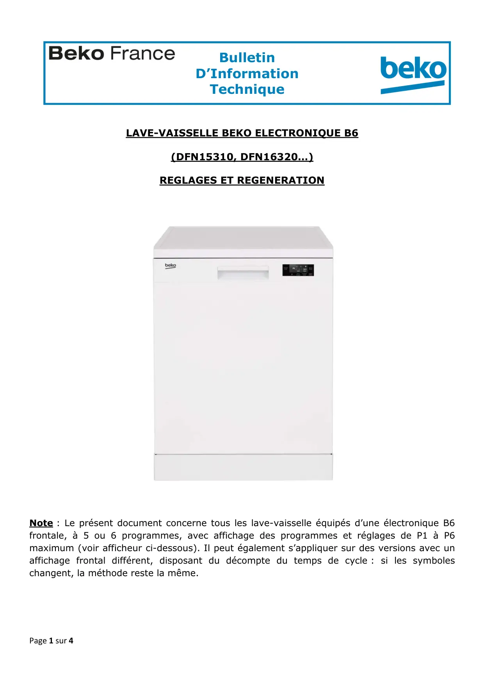
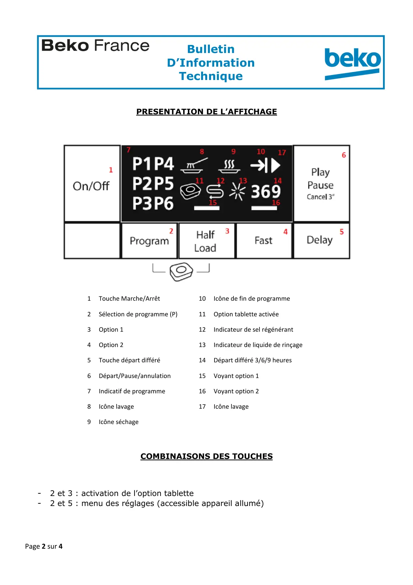
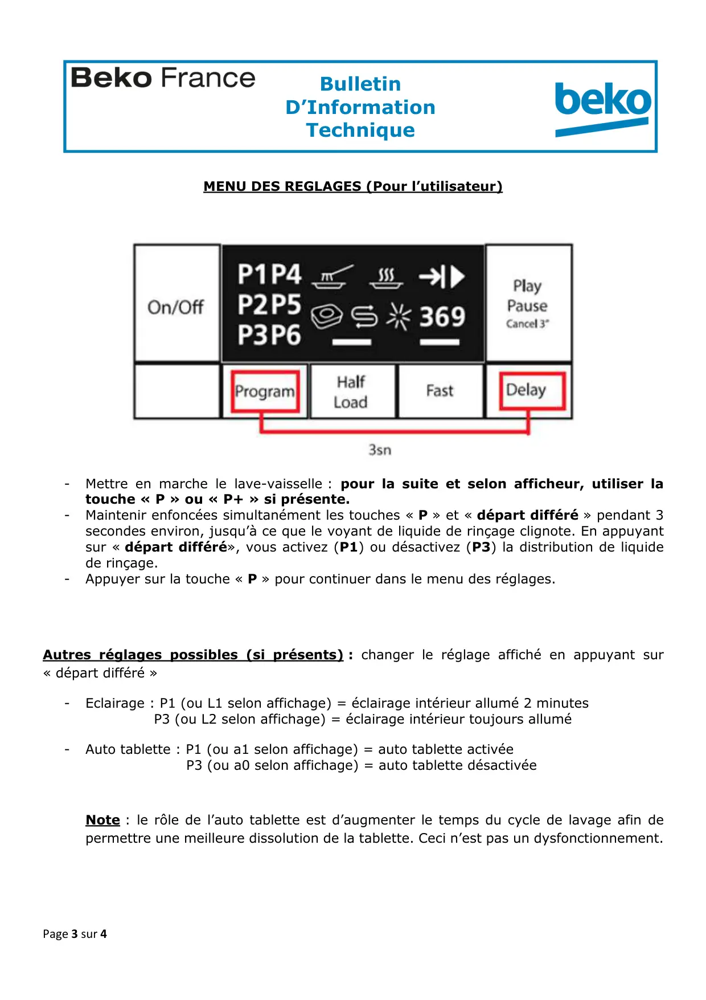
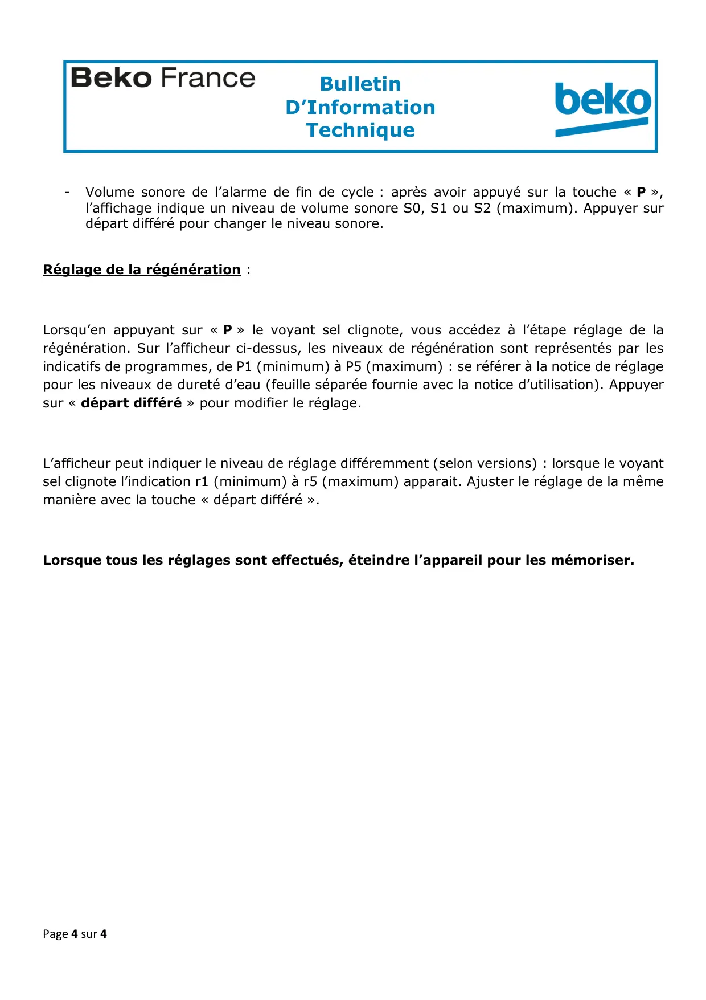

Réglages Régénération lave vaisselle B6

Page 1 sur 4BulletinD’InformationTechniqueZA de la Voûte73650 PETIT COURONNE01.58.34.46.46LAVE-VAISSELLE BEKO ELECTRONIQUE B6(DFN15310, DFN16320…)REGLAGES ET REGENERATIONNote : Le présent document concerne tous les lave-vaisselle équipés d’une électronique B6frontale, à 5 ou 6 programmes, avec affichage des programmes et réglages de P1 à P6maximum (voir afficheur ci-dessous). Il peut également s’appliquer sur des versions avec unaffichage frontal différent, disposant du décompte du temps de cycle : si les symboleschangent, la méthode reste la même.
1 / 4
Page 2 sur 4BulletinD’InformationTechniqueZA de la Voûte73650 PETIT COURONNE01.58.34.46.46PRESENTATION DE L’AFFICHAGE1Touche Marche/Arrêt10Icône de fin de programme2Sélection de programme (P)11Option tablette activée3Option 112Indicateur de sel régénérant4Option 213Indicateur de liquide de rinçage5Touche départ différé14Départ différé 3/6/9 heures6Départ/Pause/annulation15Voyant option 17Indicatif de programme16Voyant option 28Icône lavage17Icône lavage9Icône séchageCOMBINAISONS DES TOUCHES-2 et 3 : activation de l’option tablette-2 et 5 : menu des réglages (accessible appareil allumé)
2 / 4
Page 3 sur 4BulletinD’InformationTechniqueZA de la Voûte73650 PETIT COURONNE01.58.34.46.46MENU DES REGLAGES (Pour l’utilisateur)-Mettre en marche le lave-vaisselle : pour la suite et selon afficheur, utiliser latouche « P » ou « P+ » si présente.-Maintenir enfoncées simultanément les touches « P » et « départ différé » pendant 3secondes environ, jusqu’à ce que le voyant de liquide de rinçage clignote. En appuyantsur « départ différé», vous activez (P1) ou désactivez (P3) la distribution de liquidede rinçage.-Appuyer sur la touche « P » pour continuer dans le menu des réglages.Autres réglages possibles (si présents) : changer le réglage affiché en appuyant sur« départ différé »-Eclairage : P1 (ou L1 selon affichage) = éclairage intérieur allumé 2 minutesP3 (ou L2 selon affichage) = éclairage intérieur toujours allumé-Auto tablette : P1 (ou a1 selon affichage) = auto tablette activéeP3 (ou a0 selon affichage) = auto tablette désactivéeNote : le rôle de l’auto tablette est d’augmenter le temps du cycle de lavage afin depermettre une meilleure dissolution de la tablette. Ceci n’est pas un dysfonctionnement.
3 / 4
Page 4 sur 4BulletinD’InformationTechniqueZA de la Voûte73650 PETIT COURONNE01.58.34.46.46-Volume sonore de l’alarme de fin de cycle : après avoir appuyé sur la touche « P »,l’affichage indique un niveau de volume sonore S0, S1 ou S2 (maximum). Appuyer surdépart différé pour changer le niveau sonore.Réglage de la régénération :Lorsqu’en appuyant sur « P » le voyant sel clignote, vous accédez à l’étape réglage de larégénération. Sur l’afficheur ci-dessus, les niveaux de régénération sont représentés par lesindicatifs de programmes, de P1 (minimum) à P5 (maximum) : se référer à la notice de réglagepour les niveaux de dureté d’eau (feuille séparée fournie avec la notice d’utilisation). Appuyersur « départ différé » pour modifier le réglage.L’afficheur peut indiquer le niveau de réglage différemment (selon versions) : lorsque le voyantsel clignote l’indication r1 (minimum) à r5 (maximum) apparait. Ajuster le réglage de la mêmemanière avec la touche « départ différé ».Lorsque tous les réglages sont effectués, éteindre l’appareil pour les mémoriser.
4 / 4